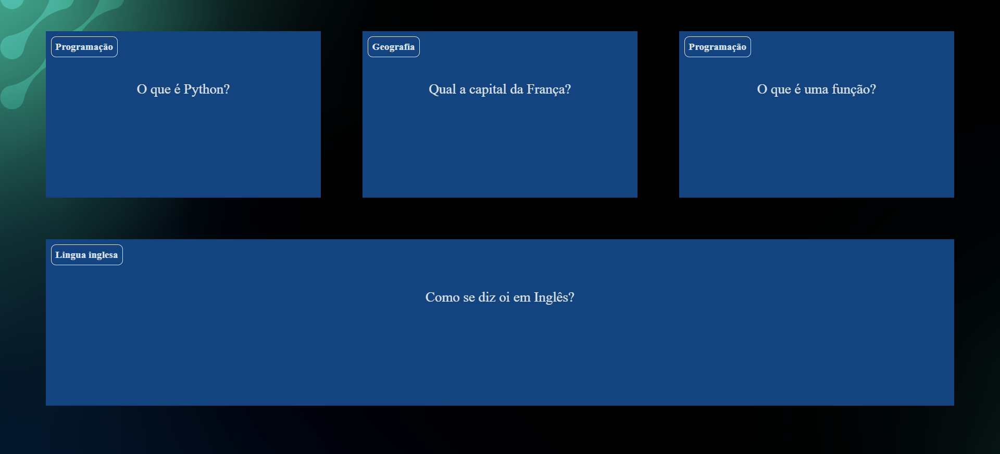

Meus projetos

Primeiras páginas criandas com o HTML e CSS.
Este projeto é uma página web que apresenta as minhas primeiras páginas criadas utilizando as ferramentas do Html e CSS

Uma hitória de aventura feita pelas ferramentas de HTML e CSS.
Essa história interativa foi desenvolvida como parte de um projeto de aprendizado, utilizando HTML, CSS e JavaScript para criar uma narrativa onde o leitor pode tomar decisões que influenciam o rumo da história.

Quiz de perguntas utilizando Pyhton e JavaScript
Este projeto cria uma experiência interativa educativa sobre perguntas diversas, permitindo aos usuários explorar informações sobre geografia, programação e linguagem.